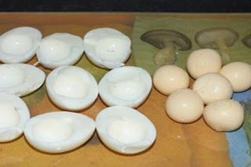
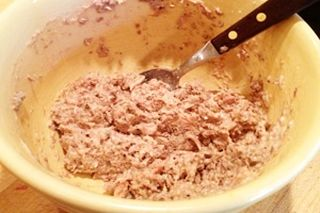
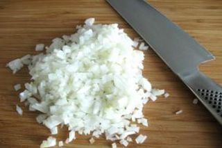
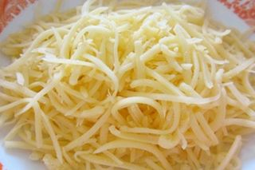
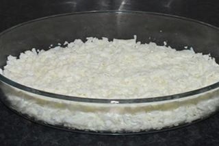
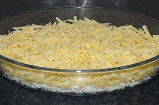
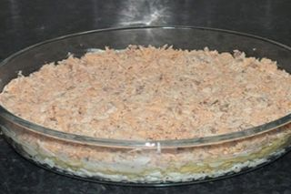
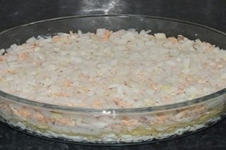
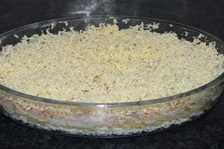
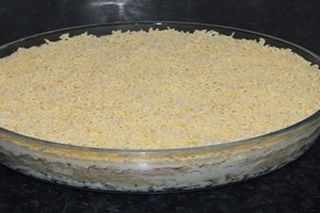

Шаг 1: подготавливаем ингредиенты.

Отваренные вкрутую яйца очищаем от скорлупы, промываем под холодной проточной водой от осколков и сушим бумажными кухонными полотенцами. Затем отделяем белки от желтков и натираем их на мелкой терке по отдельным тарелкам. Терку промываем и сушим, она еще понадобится.

Теперь с помощью ключа для консервов открываем баночку с сардиной и сливаем с нее жидкость. Затем перекладываем рыбу в тарелку, удаляем из нее крупные кости и разминаем кусочки сардины столовой вилкой до консистенции кашицы.

Дальше очищаем от кожуры репчатый лук, промываем его под холодной проточной водой, сушим бумажными полотенцами, кладем на разделочную доску и нарезаем его мелкими кубиками размером до 4 – 5 миллиметров. Перекладываем нарезку в отдельную тарелку.

С твердого сыра срезаем парафиновую корку и натираем его на мелкой или средней терке в чистую тарелку. Также кладем на кухонный стол замороженное сливочное масло и майонез.

Теперь берем глубокий судок и выкладываем в него салат слоями, нанося на каждый прослойку майонеза. Первый слой - натертый белок.

Второй слой – тертый сыр.

Третий слой – сардина.

Четвертый слой – нарезанный лук.

Пятый слой – сливочное масло. Натираем его на терке поверх лука!

Шестой и последний слой – тертые желтки, их майонезом не смазываем.
После того как салат был полностью сформирован, закрываем судок плотно прилегающей крышкой и ставим его в холодильник на пару часов, а лучше на всю ночь. За это время блюдо пропитается. По истечении нужного времени украшаем салат по вкусу и подаем его к столу.